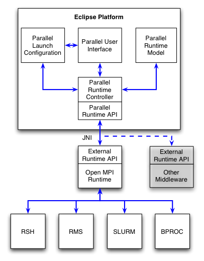
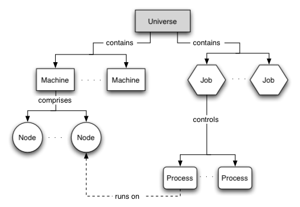
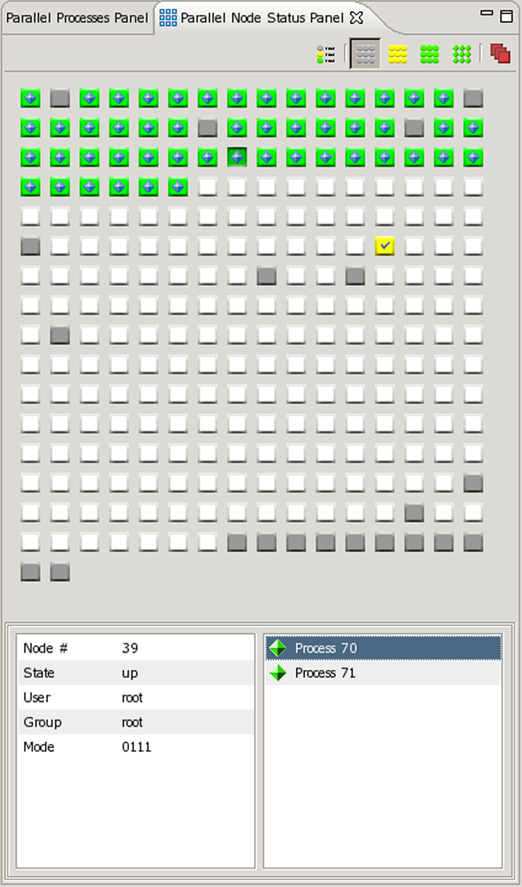
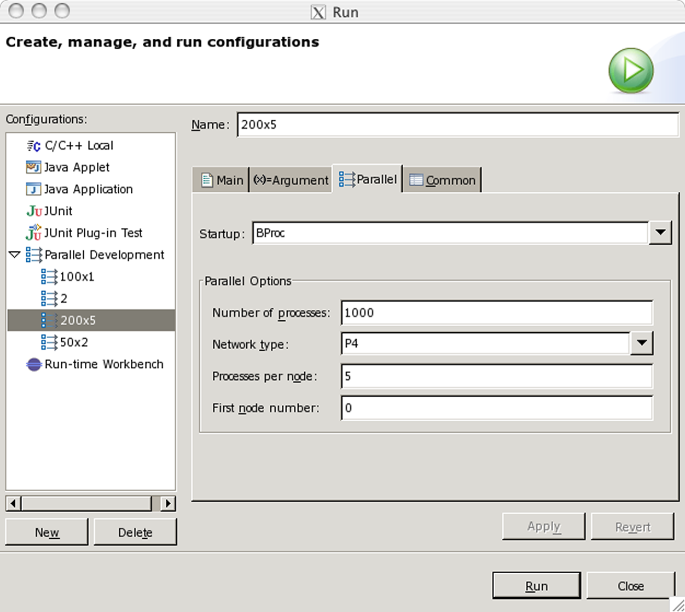
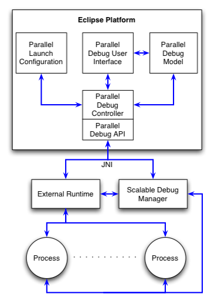
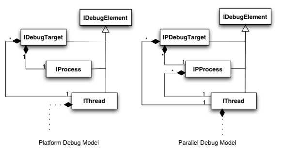
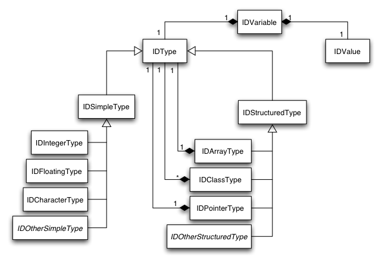

parallel tools platform subproject

| ptp design document parallel tools platform subproject |
|
| Author | : Greg Watson |
| Revision Date | : 19 January 2005 - Version: 0.1.0 |
| Change History | : 0.1.0 - Document Creation |
The Parallel Tools Platform (PTP) is a portable, scalable, standards-based integrated development environment specifically suited for application development for parallel computer architectures. The PTP combines existing functionality in the Eclipse Platform, the C/C++ Development Tools, new services specifically designed to interface with parallel computing systems, and new Fortran language support, to enable the development of parallel programs suitable for a range of scientific, engineering and commercial applications.
This document describes the major design elements of the Parallel Tools Platform and outlines the major objectives for achieving the first release of software.
The parallel execution environment provides the interface between Eclipse and a parallel runtime system that is used to execute programs on a parallel machine. Unlike a normal sequential runtime, launching a parallel program is complicated by the number of different parallel architectures, each with its own specialized commands for managing the execution of programs. Although there is some standardization in the way to write parallel codes (such as MPI), there is little standardization in how to launch, control and interact with a parallel program. To further complicate matters, many parallel systems employ some form of resource allocation system, such as a job scheduler. In many cases, execution of a parallel program must be managed by the resource allocation system, rather than by direct invocation by the user.
Due to the complex nature of interfacing with many different parallel runtime systems, our plan is to use an abstract parallel model within the Eclipse environment and provide a single parallel runtime interface to the outside world. Architecture specific details of the parallel system(s) will then be managed by a middleware layer that will provide a common set of services for interacting with arbitrary parallel runtime and resource allocation systems. This middleware layer will initially use the Open MPI runtime component (which is separate, and independent, from the actual MPI implementation). If necessary, other middleware components can be added at a later time. The Open MPI runtime has planned support for a wide range of legacy message passing systems, and can also be used for parallel programs that use the shared memory model.
The following diagram shows the proposed architecture.

The execution environment comprises five main components: abstract parallel model, parallel runtime controller, parallel runtime API, parallel user interface, and parallel launch configuration. Each of these is discussed in more detail below.
Unlike execution support for sequential languages, the parallel execution environment must maintain an internal model that represents the state of external components, such as parallel machines, resource allocation systems, and the executing program themselves. The following is a conceptual diagram of the model.

The universe is the top most object for managing the execution environment. There can be any number of machines and jobs in a universe. Each machine is composed of an arbitrary number of nodes. A node is where computation is undertaken, and may be a remote system in the case of a distributed memory architecture, or a local processor in the case of an SMP machine. A job is a unit of work that is suitable for a resource allocation system. Once a job is scheduled for execution, it causes processes to be started on the appropriate nodes of one or more machines. A process is an instruction stream that performs some computation. The job then provides a reference point for each process that is participating in the parallel execution. Machines, nodes, processes, and jobs all have attributes that reflect the status of the particular component.
The parallel runtime controller is responsible for controlling interaction between the parallel tools platform components and the external runtime. It provides services to support the following actions:
Communication between the runtime controller and the external parallel runtime systems is via the parallel runtime API.
The parallel runtime API provides a generic interface to external parallel runtime systems. The services supported by the API include:
These services are provided using an architecture neutral API that vastly simplifies the interface between Eclipse and the many parallel runtime systems. Communication between Eclipse and the external runtime using this API employs Java Native Interface calls to a C library. This leads to a clean, efficient API that is suitable for use with other runtime systems in the future. The initial version of the API will provide support for the Open MPI runtime.
Another significant difference between runtime support for sequential and parallel programs, is the need to be able to monitor the status of machine during program execution. In addition, where a resource allocation system is employed, a visual indication of the status of jobs as they progress through the queues is required. To accomplish this, our intention is to develop a number of user interface elements that, by utilizing services supplied by the middleware layer, will provide the user with the ability to monitor and control system and job status. A prototype user interface element for displaying machine, node and process status information is shown below.

User interface elements that are required for the execution environment are:
The parallel launch configuration uses the launch framework to manage the execution of a parallel program. The parallel launch configuration allows the user to specify the resource requirements necessary for correct execution of the program. This might include resources such as the number of processes, the type of network to use for interprocess communication, the amount of memory required, and the amount of time required to execute the program. The image below shows an early implementation of the parallel launch configuration dialog.

After the resource information has been specified, the job is ready to be launched. Pressing the 'run' button will cause the launch configuration to pass the job information to the runtime controller, which will schedule the job for execution by the external runtime. Jobs that require resources to be allocated before execution will be placed in the appropriate queue, and the user will be notified once the job begins execution. Jobs that can be run interactively will be scheduled for immediate execution by the external runtime system.
The following sections identify additional components of the parallel execution environment that will be considered for future releases.
Parallel programs typically require one or more input data files, and may generate one or more output data files. Unlike sequential execution where the program executes on the local machine, parallel programs will normally execute on one or more remote machines. This complicates data file management, because the correct data file must be available to each process prior to execution. In addition, if the parallel processes produce individual output data files, these may need to collected from remote systems, then post-processed in some manner. There are a variety of methods for managing input/output data files, including network file systems, scripts, etc. Ideally, however, the execution environment would provide some standard mechanisms for managing data files in a range of different environments.
Although it is possible to run Eclipse in the same environment as the parallel programs (e.g. using X-Windows), it would be much more convenient if Eclipse was running on the users local workstation (laptop, etc.). The Open MPI runtime supports this model of parallel execution, however there are a number of other issues that also need to be considered. In particular, it is unlikely that the users workstation contains the necessary tool chain, libraries and header files that are required to build the parallel program. To overcome this, it will be necessary to provide a remote build environment in addition to the remote execution environment.
The parallel debugger is a key component of the Parallel Tools Platform. The debugger relies on the services of the execution environment to launch a parallel program so that each process is individually controlled by the debugger. The user is then able to control the processes, either individually, or as groups, by setting breakpoints, single stepping, etc. The debugger also provides a user interface that allows the user to examine process state information, and view variables within the executing processes. Since a parallel program can consist of many thousands of processes, the control mechanism and user interface must be implemented in such a way that it is scalable and efficient. The following diagram shows the architecture of the parallel debugger:

The main components of the parallel debugger are the parallel debug model, the parallel debug user interface, the parallel debug controller and debug API, and the scalable debug interface. An additional component is the debug data model, which is not shown in the diagram. Each of these components is described in more detail below.
The parallel debug model is an extension of the platform debug model. As it is currently implemented, the platform debug model supports the notion of multiple threads, but only a single executing process. The parallel debug model extends this to support the notion of multiple processes, each of which can have multiple threads of execution. The following diagrams shows these extensions:

It is expected that by preserving the existing interfaces, these extensions should be able to be implemented with minimal impact on the platform.
In addition to extending the debug model, the parallel debugger also provides a number of additional user interface elements to the standard debug user interface. These elements are required in order to manage large numbers of objects (processes, variables, etc.) in an way that avoids overwhelming the IDE. These new user interface elements include:
The parallel debug controller is responsible for managing the interactions between the parallel debugger and the external runtime and scalable debug interface. The main functions performed by the parallel debug controller include:
Communication between the debug controller and the external components is via the parallel debug API.
The parallel debug API provides an architecture neutral interface to the external parallel debugger components. The API supports a range of high-level debugger concepts, including:
Most of API functionality is directly implemented by the scalable debug manager.
The scalable debug manager is an external component of the parallel debugger architecture that is responsible for coordinating a debug session involving large numbers of cooperating processes. This manager utilizes the services of the external runtime to launch the remote processes under debug control, then manages all communication between the debugger and the remote processes. The primary goal of this component is to achieve scalability when a debug session may involve thousands of processes. The main functions of the scalable debug manager include:
The existing platform debug model provides two generic interfaces for dealing with debug data:
The expectation is that a particular debugger implementation will extend these interfaces to provide language specific functionality. Indeed, this is done in the CDT plugin with the ICVariable and ICValue interfaces, and CDT also adds another interface ICType that represents the type of a variable. In both the platform debug mode and the CDT debug model, the usage model is that variables, values and types are predominately for the display of program data structures in the debug user interface. Indeed, the structure of these interfaces matches how a user interacts with the debug user interface. For example, the only way to display the contents of an array is to manually select each element in turn. While this approach is adequate for the current suite of languages and debuggers, it presents some limitations for debugging parallel programs, and for the adoption of highly integrated, sophisticated parallel tools.
In contrast, for debugging parallel programs, and in order to support the type of parallel tools we envision being integrated into the Eclipse platform, a more sophisticated data model is required. One possible model is shown in the diagram below.

In this model, we propose to maintain both type information and value information within a single object. In addition, the type information will completely describe the data format of the value, and will be flexible enough to represent any data type in a language-neutral manner. Both the type and value information will be accessible in the model, and the data value will implement a lazy evaluation scheme that optimizes extracting the data from an executing program to how the data is used within the platform. In addition, the model will provide a range of methods for manipulation of the data (arithmetic operations, array operations, etc.) while in the intermediate format, and for conversion between the model and java native data types.
T.B.D.
The tool integration component of the parallel tools platform provides a range of services that support the integration of parallel tools into the Eclipse platform. Initially, these services will comprise well-defined interfaces to the models, user interface components, and controllers that are contributed by other components of the parallel tools platform. However, as tool integration progresses, it is expected that other core services that can be shared between tool implementations, will be identified and defined. The following sections describe services that will be available in the initial implementation.
The parallel runtime services will prove integrated tools with information about, and control of, the parallel environment. These services include:
This information can be used by parallel tools to determine the operational environment, deploy tool specific functions on parallel machines, and interact with running programs.
The parallel debug services allow integrated parallel tools to interact directly with processes of an executing parallel program. This includes:
Parallel tools can use these models to access a wide range of functionality that is normally only available to a debugger.
A range of user interface components are available for use by integrated parallel tools. These components provide functionality that is specifically designed for the compact and efficient display of large numbers of objects. Examples of such components include:
By utilizing these components, parallel tool developers are relieved of the necessity to develop their own components to provide similar functionality. In addition, the user benefits from a consistent look and feel across a range of different tools. The model is also designed to encourage contribution of new user interface components by tool developers, who are able to minimize their support requirements for common user interface features, while concentrating on their core tool functionality.
T.B.D.
The end-user support component of the parallel tools platform aims to produce a platform that is designed to assist the end-users of parallel programs (as apposed to the developers of parallel programs) to effectively work in a parallel programming environment. It is envisaged that this component will take advantage of the rich client platform capability of eclipse to provide a non-IDE application that will retain core components of the parallel tools platform. The resulting application will provide the following functionality:
The Fortran Development Tools is a stand-alone component, since it is not specifically required for parallel tools platform support. The aim is to provide Fortran language support for the Eclipse IDE with a similar level of integration to that provided by the C/C++ Development Tools. The initial version of FDT will focus on providing the following features:
The main item of future work will be the provision of a Fortran parser, along with enhanced search functionality, and content assist functionality. In addition, support for Fortran in mixed-language environments will be provided, with a wizard to automatically provide C interfaces to Fortran procedures using the Fortran 2003 C-interop standard.